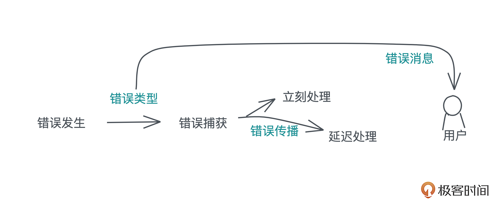
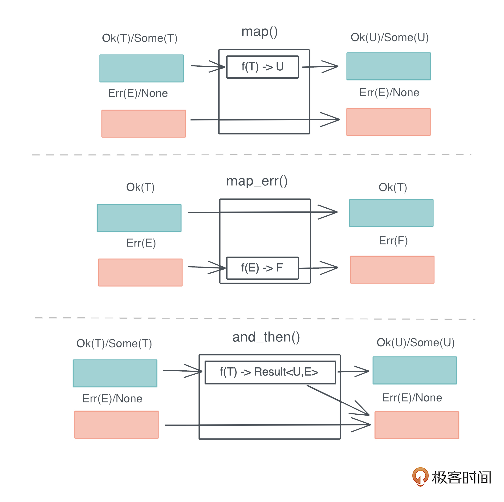

- 00 开篇词 让Rust成为你的下一门主力语言.md
- 01 内存：值放堆上还是放栈上，这是一个问题.md
- 02 串讲：编程开发中，那些你需要掌握的基本概念.md
- 03 初窥门径：从你的第一个Rust程序开始！.md
- 04 get hands dirty：来写个实用的CLI小工具.md
- 05 get hands dirty：做一个图片服务器有多难？.md
- 06 get hands dirty：SQL查询工具怎么一鱼多吃？.md
- 07 所有权：值的生杀大权到底在谁手上？.md
- 08 所有权：值的借用是如何工作的？.md
- 09 所有权：一个值可以有多个所有者么？.md
- 10 生命周期：你创建的值究竟能活多久？.md
- 11 内存管理：从创建到消亡，值都经历了什么？.md
- 12 类型系统：Rust的类型系统有什么特点？.md
- 13 类型系统：如何使用trait来定义接口？.md
- 14 类型系统：有哪些必须掌握的trait？.md
- 15 数据结构：这些浓眉大眼的结构竟然都是智能指针？.md
- 16 数据结构：Vec_T_、&[T]、Box_[T]_ ，你真的了解集合容器么？.md
- 17 数据结构：软件系统核心部件哈希表，内存如何布局？.md
- 18 错误处理：为什么Rust的错误处理与众不同？.md
- 19 闭包：FnOnce、FnMut和Fn，为什么有这么多类型？.md
- 20 4 Steps ：如何更好地阅读Rust源码？.md
- 21 阶段实操（1）：构建一个简单的KV server-基本流程.md
- 22 阶段实操（2）：构建一个简单的KV server-基本流程.md
- 23 类型系统：如何在实战中使用泛型编程？.md
- 24 类型系统：如何在实战中使用trait object？.md
- 25 类型系统：如何围绕trait来设计和架构系统？.md
- 26 阶段实操（3）：构建一个简单的KV server-高级trait技巧.md
- 27 生态系统：有哪些常有的Rust库可以为我所用？.md
- 28 网络开发（上）：如何使用Rust处理网络请求？.md
- 29 网络开发（下）：如何使用Rust处理网络请求？.md
- 30 Unsafe Rust：如何用C++的方式打开Rust？.md
- 31 FFI：Rust如何和你的语言架起沟通桥梁？.md
- 32 实操项目：使用PyO3开发Python3模块.md
- 33 并发处理（上）：从atomics到Channel，Rust都提供了什么工具？.md
- 34 并发处理（下）：从atomics到Channel，Rust都提供了什么工具？.md
- 35 实操项目：如何实现一个基本的MPSC channel？.md
- 36 阶段实操（4）：构建一个简单的KV server-网络处理.md
- 37 阶段实操（5）：构建一个简单的KV server-网络安全.md
- 38 异步处理：Future是什么？它和async_await是什么关系？.md
- 39 异步处理：async_await内部是怎么实现的？.md
- 40 异步处理：如何处理异步IO？.md
- 41 阶段实操（6）：构建一个简单的KV server-异步处理.md
- 42 阶段实操（7）：构建一个简单的KV server-如何做大的重构？.md
- 43 生产环境：真实世界下的一个Rust项目包含哪些要素？.md
- 44 数据处理：应用程序和数据如何打交道？.md
- 45 阶段实操（8）：构建一个简单的KV server-配置_测试_监控_CI_CD.md
- 46 软件架构：如何用Rust架构复杂系统？.md
- 加餐 Rust2021版次问世了！.md
- 加餐 代码即数据：为什么我们需要宏编程能力？.md
- 加餐 宏编程（上）：用最“笨”的方式撰写宏.md
- 加餐 宏编程（下）：用 syn_quote 优雅地构建宏.md
- 加餐 愚昧之巅：你的Rust学习常见问题汇总.md
- 加餐 期中测试：参考实现讲解.md
- 加餐 期中测试：来写一个简单的grep命令行.md
- 加餐 这个专栏你可以怎么学，以及Rust是否值得学？.md
- 大咖助场 开悟之坡（上）：Rust的现状、机遇与挑战.md
- 大咖助场 开悟之坡（下）：Rust的现状、机遇与挑战.md
- 特别策划 学习锦囊（一）：听听课代表们怎么说.md
- 特别策划 学习锦囊（三）：听听课代表们怎么说.md
- 特别策划 学习锦囊（二）：听听课代表们怎么说.md
- 用户故事 绝望之谷：改变从学习开始.md
- 用户故事 语言不仅是工具，还是思维方式.md
- 结束语 永续之原：Rust学习，如何持续精进？.md
18 错误处理：为什么Rust的错误处理与众不同？
你好，我是陈天。
作为被线上业务毒打过的开发者，我们都对墨菲定律刻骨铭心。任何一个系统，只要运行的时间足够久，或者用户的规模足够大，极小概率的错误就一定会发生。比如，主机的磁盘可能被写满、数据库系统可能会脑裂、上游的服务比如 CDN 可能会宕机，甚至承载服务的硬件本身可能损坏等等。
因为我们平时写练习代码，一般只会关注正常路径，可以对小概率发生的错误路径置之不理；但在实际生产环境中，任何错误只要没有得到妥善处理，就会给系统埋下隐患，轻则影响开发者用户体验，重则会给系统带来安全上的问题，马虎不得。
在一门编程语言中，控制流程是语言的核心流程，而错误处理又是控制流程的重要组成部分。
语言优秀的错误处理能力，会大大减少错误处理对整体流程的破坏，让我们写代码更行云流水，读起来心智负担也更小。- 
对我们开发者来说，错误处理包含这么几部分：
- 当错误发生时，用合适的错误类型捕获这个错误。
- 错误捕获后，可以立刻处理，也可以延迟到不得不处理的地方再处理，这就涉及到错误的传播（propagate）。
- 最后，根据不同的错误类型，给用户返回合适的、帮助他们理解问题所在的错误消息。
作为一门极其注重用户体验的编程语言，Rust 从其它优秀的语言中，尤其是 Haskell ，吸收了错误处理的精髓，并以自己独到的方式展现出来。
错误处理的主流方法
在详细介绍 Rust 的错误处理方式之前，让我们稍稍放慢脚步，看看错误处理的三种主流方法以及其他语言是如何应用这些方法的。
使用返回值（错误码）
使用返回值来表征错误，是最古老也是最实用的一种方式，它的使用范围很广，从函数返回值，到操作系统的系统调用的错误码 errno、进程退出的错误码retval，甚至 HTTP API 的状态码，都能看到这种方法的身影。
举个例子，在 C 语言中，如果 fopen(filename) 无法打开文件，会返回 NULL，调用者通过判断返回值是否为 NULL，来进行相应的错误处理。
我们再看个例子：
size_t fread(void *ptr, size_t size, size_t nmemb, FILE *stream)
单看这个接口，我们很难直观了解，当读文件出错时，错误是如何返回的。从文档中，我们得知，如果返回的 size_t 和传入的 size_t 不一致，那么要么发生了错误，要么是读到文件尾（EOF），调用者要进一步通过 ferror 才能得到更详细的错误。
像 C 这样，通过返回值携带错误信息，有很多局限。返回值有它原本的语义，强行把错误类型嵌入到返回值原本的语义中，需要全面且实时更新的文档，来确保开发者能正确区别对待，正常返回和错误返回。
所以 Golang 对其做了扩展，在函数返回的时候，可以专门携带一个错误对象。比如上文的 fread，在 Golang 下可以这么定义：
func Fread(file *File, b []byte) (n int, err error)
Golang这样，区分开错误返回和正常返回，相对 C 来说进了一大步。- 但是使用返回值的方式，始终有个致命的问题：在调用者调用时，错误就必须得到处理或者显式的传播。
如果函数 A 调用了函数 B，在 A 返回错误的时候，就要把 B 的错误转换成 A 的错误，显示出来。如下图所示：-

这样写出来的代码会非常冗长，对我们开发者的用户体验不太好。如果不处理，又会丢掉这个错误信息，造成隐患。
另外，大部分生产环境下的错误是嵌套的。一个 SQL 执行过程中抛出的错误，可能是服务器出错，而更深层次的错误可能是，连接数据库服务器的 TLS session 状态异常。
其实知道服务器出错之外，我们更需要清楚服务器出错的内在原因。因为服务器出错这个表层错误会提供给最终用户，而出错的深层原因要提供给我们自己，服务的维护者。但是这样的嵌套错误在 C/Golang 都是很难完美表述的。
使用异常
因为返回值不利于错误的传播，有诸多限制，Java 等很多语言使用异常来处理错误。
你可以把异常看成一种关注点分离（Separation of Concerns）：错误的产生和错误的处理完全被分隔开，调用者不必关心错误，而被调者也不强求调用者关心错误。
程序中任何可能出错的地方，都可以抛出异常；而异常可以通过栈回溯（stack unwind）被一层层自动传递，直到遇到捕获异常的地方，如果回溯到 main 函数还无人捕获，程序就会崩溃。如下图所示：-

使用异常来返回错误可以极大地简化错误处理的流程，它解决了返回值的传播问题。
然而，上图中异常返回的过程看上去很直观，就像数据库中的事务（transaction）在出错时会被整体撤销（rollback）一样。但实际上，这个过程远比你想象的复杂，而且需要额外操心异常安全（exception safety）。
我们看下面用来切换背景图片的（伪）代码：
void transition(...) {
lock(&mutex);
delete background;
++changed;
background = new Background(...);
unlock(&mutex);
}
试想，如果在创建新的背景时失败，抛出异常，会跳过后续的处理流程，一路栈回溯到 try catch 的代码，那么，这里锁住的 mutex 无法得到释放，而已有的背景被清空，新的背景没有创建，程序进入到一个奇怪的状态。
确实在大多数情况下，用异常更容易写代码，但当异常安全无法保证时，程序的正确性会受到很大的挑战。因此，你在使用异常处理时，需要特别注意异常安全，尤其是在并发环境下。
而比较讽刺的是，保证异常安全的第一个原则就是：避免抛出异常。这也是 Golang 在语言设计时避开了常规的异常，走回返回值的老路的原因。
异常处理另外一个比较严重的问题是：开发者会滥用异常。只要有错误，不论是否严重、是否可恢复，都一股脑抛个异常。到了需要的地方，捕获一下了之。殊不知，异常处理的开销要比处理返回值大得多，滥用会有很多额外的开销。
使用类型系统
第三种错误处理的方法就是使用类型系统。其实，在使用返回值处理错误的时候，我们已经看到了类型系统的雏形。
错误信息既然可以通过已有的类型携带，或者通过多返回值的方式提供，那么通过类型来表征错误，使用一个内部包含正常返回类型和错误返回类型的复合类型，通过类型系统来强制错误的处理和传递，是不是可以达到更好的效果呢？
的确如此。这种方式被大量使用在有强大类型系统支持的函数式编程语言中，如 Haskell/Scala/Swift。其中最典型的包含了错误类型的复合类型是 Haskell 的 Maybe 和 Either 类型。
Maybe 类型允许数据包含一个值（Just）或者没有值（Nothing），这对简单的不需要类型的错误很有用。还是以打开文件为例，如果我们只关心成功打开文件的句柄，那么 Maybe 就足够了。
当我们需要更为复杂的错误处理时，我们可以使用 Either 类型。它允许数据是 Left a 或者 Right b 。其中，a 是运行出错的数据类型，b 可以是成功的数据类型。-

我们可以看到，这种方法依旧是通过返回值返回错误，但是错误被包裹在一个完整的、必须处理的类型中，比 Golang 的方法更安全。
我们前面提到，使用返回值返回错误的一大缺点是，错误需要被调用者立即处理或者显式传递。但是使用 Maybe/Either 这样的类型来处理错误的好处是，我们可以用函数式编程的方法简化错误的处理，比如map、fold 等函数，让代码相对不那么冗余。
需要注意的是，很多不可恢复的错误，如“磁盘写满，无法写入”的错误，使用异常处理可以避免一层层传递错误，让代码简洁高效，所以大多数使用类型系统来处理错误的语言，会同时使用异常处理作为补充。
Rust 的错误处理
由于诞生的年代比较晚，Rust 有机会从已有的语言中学习到各种错误处理的优劣。对于 Rust 来说，目前的几种方式相比而言，最佳的方法是，使用类型系统来构建主要的错误处理流程。
Rust 偷师 Haskell，构建了对标 Maybe 的 Option 类型和 对标 Either 的 Result 类型。-

Option 和 Result
Option 是一个 enum，其定义如下：
pub enum Option<T> {
None,
Some(T),
}
它可以承载有值/无值这种最简单的错误类型。- Result 是一个更加复杂的 enum，其定义如下：
#[must_use = "this `Result` may be an `Err` variant, which should be handled"]
pub enum Result<T, E> {
Ok(T),
Err(E),
}
当函数出错时，可以返回 Err(E)，否则 Ok(T)。
我们看到，Result 类型声明时还有个 must_use 的标注，编译器会对有 must_use 标注的所有类型做特殊处理：如果该类型对应的值没有被显式使用，则会告警。这样，保证错误被妥善处理。如下图所示：-

这里，如果我们调用 read_file 函数时，直接丢弃返回值，由于 #[must_use] 的标注，Rust 编译器报警，要求我们使用其返回值。
这虽然可以极大避免遗忘错误的显示处理，但如果我们并不关心错误，只需要传递错误，还是会写出像 C 或者 Golang 一样比较冗余的代码。怎么办？
? 操作符
好在 Rust 除了有强大的类型系统外，还具备元编程的能力。早期 Rust 提供了 try! 宏来简化错误的显式处理，后来为了进一步提升用户体验，try! 被进化成 ? 操作符。
所以在 Rust 代码中，如果你只想传播错误，不想就地处理，可以用 ? 操作符，比如（代码）:
use std::fs::File;
use std::io::Read;
fn read_file(name: &str) -> Result<String, std::io::Error> {
let mut f = File::open(name)?;
let mut contents = String::new();
f.read_to_string(&mut contents)?;
Ok(contents)
}
通过 ? 操作符，Rust 让错误传播的代价和异常处理不相上下，同时又避免了异常处理的诸多问题。
? 操作符内部被展开成类似这样的代码：
match result {
Ok(v) => v,
Err(e) => return Err(e.into())
}
所以，我们可以方便地写出类似这样的代码，简洁易懂，可读性很强：
fut
.await?
.process()?
.next()
.await?;
整个代码的执行流程如下：-

虽然 ? 操作符使用起来非常方便，但你要注意在不同的错误类型之间是无法直接使用的，需要实现 From trait 在二者之间建立起转换的桥梁，这会带来额外的麻烦。我们暂且把这个问题放下，稍后我们会谈到解决方案。
函数式错误处理
Rust 还为 Option 和 Result 提供了大量的辅助函数，如 map/map_err/and_then，你可以很方便地处理数据结构中部分情况。如下图所示：- 
通过这些函数，你可以很方便地对错误处理引入 Railroad oriented programming 范式。比如用户注册的流程，你需要校验用户输入，对数据进行处理，转换，然后存入数据库中。你可以这么撰写这个流程：
Ok(data)
.and_then(validate)
.and_then(process)
.map(transform)
.and_then(store)
.map_error(...)
执行流程如下图所示：-

此外，Option 和 Result的互相转换也很方换，这也得益于 Rust 构建的强大的函数式编程的能力。
我们可以看到，无论是通过 ? 操作符，还是函数式编程进行错误处理，Rust 都力求让错误处理灵活高效，让开发者使用起来简单直观。
panic! 和 catch_unwind
使用 Option 和 Result 是 Rust 中处理错误的首选，绝大多数时候我们也应该使用，但 Rust 也提供了特殊的异常处理能力。
在 Rust 看来，一旦你需要抛出异常，那抛出的一定是严重的错误。所以，Rust 跟 Golang 一样，使用了诸如 panic! 这样的字眼警示开发者：想清楚了再使用我。在使用 Option 和 Result 类型时，开发者也可以对其 unwarp() 或者 expect()，强制把 Option
一般而言，panic! 是不可恢复或者不想恢复的错误，我们希望在此刻，程序终止运行并得到崩溃信息。比如下面的代码，它解析 noise protoco的协议变量：
let params: NoiseParams = "Noise_XX_25519_AESGCM_SHA256".parse().unwrap();
如果开发者不小心把协议变量写错了，最佳的方式是立刻 panic! 出来，让错误立刻暴露，以便解决这个问题。
有些场景下，我们也希望能够像异常处理那样能够栈回溯，把环境恢复到捕获异常的上下文。Rust 标准库下提供了 catch_unwind() ，把调用栈回溯到 catch_unwind 这一刻，作用和其它语言的 try {…} catch {…} 一样。见如下代码：
use std::panic;
fn main() {
let result = panic::catch_unwind(|| {
println!("hello!");
});
assert!(result.is_ok());
let result = panic::catch_unwind(|| {
panic!("oh no!");
});
assert!(result.is_err());
println!("panic captured: {:#?}", result);
}
当然，和异常处理一样，并不意味着你可以滥用这一特性，我想，这也是 Rust 把抛出异常称作 panic! ，而捕获异常称作 catch_unwind的原因，让初学者望而生畏，不敢轻易使用。这也是一个不错的用户体验。
catch_unwind 在某些场景下非常有用，比如你在使用 Rust 为 erlang VM 撰写 NIF，你不希望 Rust 代码中的任何 panic! 导致 erlang VM 崩溃。因为崩溃是一个非常不好的体验，它违背了 erlang 的设计原则：process 可以 let it crash，但错误代码不该导致 VM 崩溃。
此刻，你就可以把 Rust 代码整个封装在 catch_unwind() 函数所需要传入的闭包中。这样，一旦任何代码中，包括第三方 crates 的代码，含有能够导致 panic! 的代码，都会被捕获，并被转换为一个 Result。
Error trait 和错误类型的转换
上文中，我们讲到 Result<T, E> 里 E 是一个代表错误的数据类型。为了规范这个代表错误的数据类型的行为，Rust 定义了 Error trait：
pub trait Error: Debug + Display {
fn source(&self) -> Option<&(dyn Error + 'static)> { ... }
fn backtrace(&self) -> Option<&Backtrace> { ... }
fn description(&self) -> &str { ... }
fn cause(&self) -> Option<&dyn Error> { ... }
}
我们可以定义我们自己的数据类型，然后为其实现 Error trait。
不过，这样的工作已经有人替我们简化了：我们可以使用 thiserror和 anyhow来简化这个步骤。thiserror 提供了一个派生宏（derive macro）来简化错误类型的定义，比如：
use thiserror::Error;
#[derive(Error, Debug)]
#[non_exhaustive]
pub enum DataStoreError {
#[error("data store disconnected")]
Disconnect(#[from] io::Error),
#[error("the data for key `{0}` is not available")]
Redaction(String),
#[error("invalid header (expected {expected:?}, found {found:?})")]
InvalidHeader {
expected: String,
found: String,
},
#[error("unknown data store error")]
Unknown,
}
如果你在撰写一个 Rust 库，那么 thiserror 可以很好地协助你对这个库里所有可能发生的错误进行建模。
而 anyhow 实现了 anyhow::Error 和任意符合 Error trait 的错误类型之间的转换，让你可以使用 ? 操作符，不必再手工转换错误类型。anyhow 还可以让你很容易地抛出一些临时的错误，而不必费力定义错误类型，当然，我们不提倡滥用这个能力。
作为一名严肃的开发者，我非常建议你在开发前，先用类似 thiserror 的库定义好你项目中主要的错误类型，并随着项目的深入，不断增加新的错误类型，让系统中所有的潜在错误都无所遁形。
小结
这一讲我们讨论了错误处理的三种方式：使用返回值、异常处理和类型系统。而Rust 站在巨人的肩膀上，采各家之长，形成了我们目前看到的方案：主要用类型系统来处理错误，辅以异常来应对不可恢复的错误。
- 相比 C/Golang 直接用返回值的错误处理方式，Rust 在类型上更完备，构建了逻辑更为严谨的 Option 类型和 Result 类型，既避免了错误被不慎忽略，也避免了用啰嗦的表达方式传递错误；
- 相对于 C++/Java 使用异常的方式，Rust 区分了可恢复错误和不可恢复错误，分别使用 Option/Result，以及 panic!/catch_unwind 来应对，更安全高效，避免了异常安全带来的诸多问题；
- 而对比它的老师 Haskell，Rust 的错误处理更加实用简洁，这得益于它强大的元编程功能，使用 ？操作符来简化错误的传递。
总结一下：Rust 的错误处理很实用、足够强大、处理起来又不会过于冗长，充分使用 Rust 语言本身的能力，大大简化了错误传递的代码，简洁明了，几乎接近于异常处理的方式。
当然，Rust 错误处理还有很多提升空间，尤其标准库没有给出足够的工具，导致社区里有大量的互不兼容的辅助库。不过这些都瑕不掩瑜，对 Rust 语言来说，错误处理还处于一个不断进化的阶段，相信未来标准库会给出更好更方便的答案。
思考题
如果你要开发一个类似Redis 的缓存服务器，你都会定义哪些错误？为什么？
欢迎在留言区分享你的思考。你已经打卡Rust学习第18次啦，如果你觉得有收获，也欢迎你分享给身边的朋友，邀他一起讨论。
拓展阅读
1.Exception handling considered harmful- 2.Exception safety- 3.Why does go not have exceptions- 4.对 Railroad oriented programming 范式感兴趣的同学可以看看这个 slides- 5.Noise protocol- 6.Erlang NIF- 7.thiserror- 8.anyhow
© 2019 - 2023 Liangliang Lee. Powered by Vert.x and hexo-theme-book.